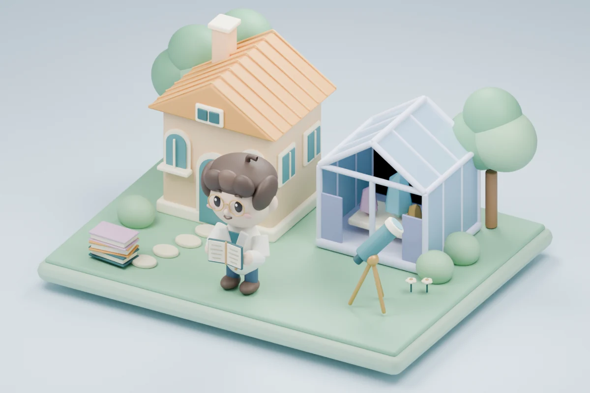

找论文、看最新进展，把想读的留在书架上。

拖动看庄园，点小路让研究员走动
这里收录等待补充材料 AI 相关性信息的期刊文章。
综合推荐参考发布时间、研究推荐和公开热榜，并交替展示不同类型与来源。选择“最新”可按日期浏览。
可同时选择多个来源，重合的进展只显示一次。数量为当前其他筛选条件下的结果。
可多选期刊，并与来源、研究主题一起筛选。数量为当前其他条件下的结果；零条期刊也可选择。
修正立即保存在当前浏览器。导出后由维护者审核、提交和发布，才会应用到全站。